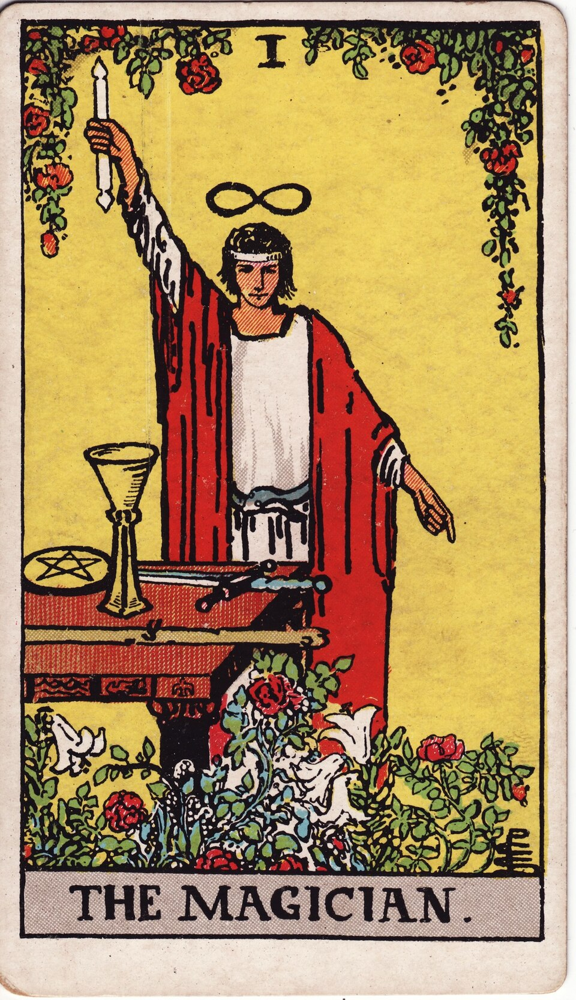
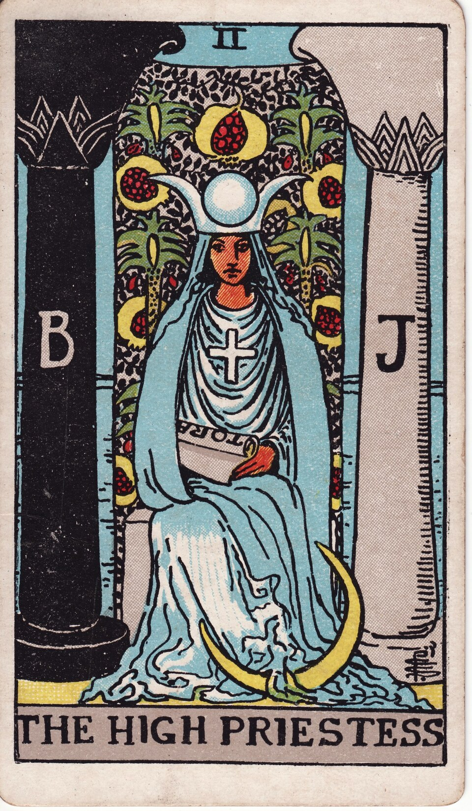

авторский курс по Таро
Таро:
уверенный расклад
От первой карты — к точному, осознанному раскладу. Старшие и Младшие Арканы простым и глубоким языком.
Жаннета
автор курса · практик с опытом 5+ лет

